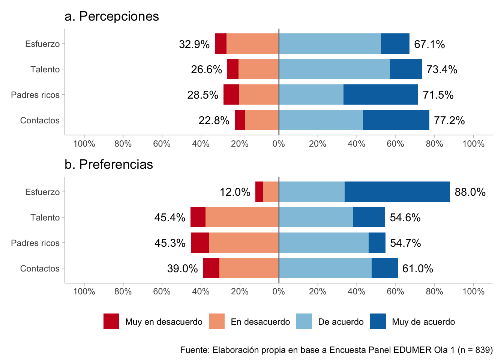
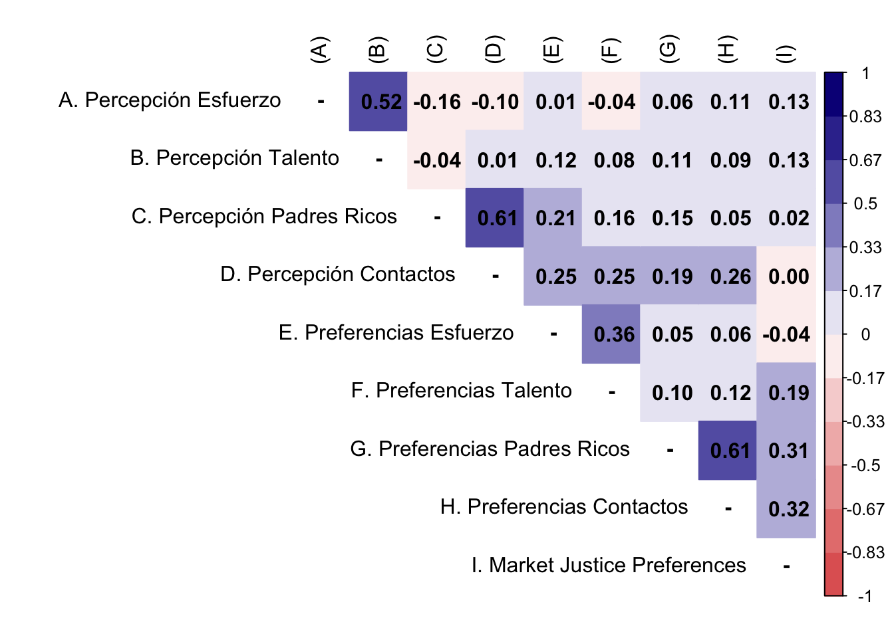
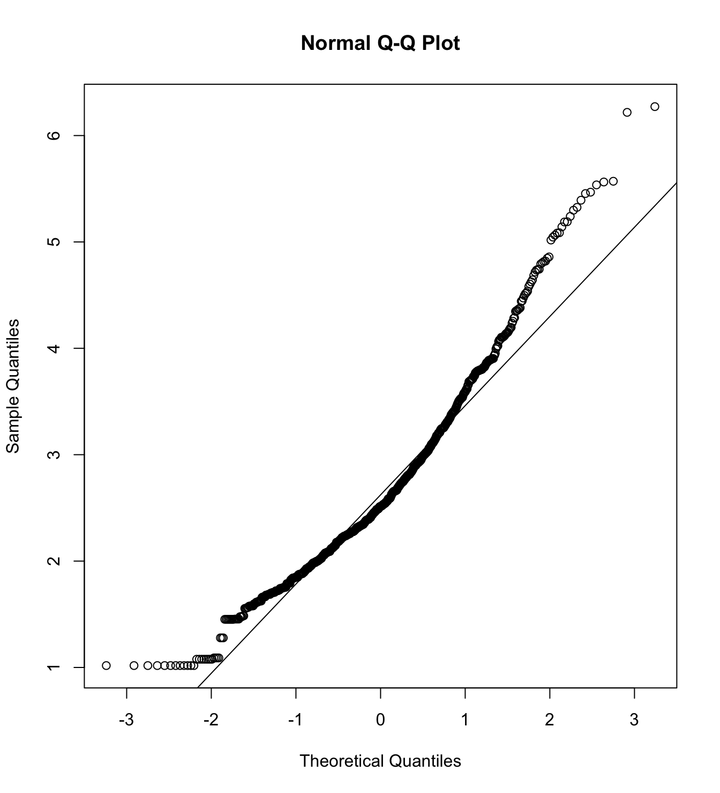

if (! require("pacman")) install.packages("pacman")
pacman::p_load(tidyverse,
sjmisc,
lavaan,
psych,
corrplot,
ggdist,
patchwork,
sjlabelled,
semTools,
gtools,
RColorBrewer,
skimr)
options(scipen=999)
rm(list = ls())1 Presentación
Este documento de ejemplo presenta el código empleado para un análisis de datos en el marco del taller de Introducción a Quarto y Github por parte del equipo del Proyecto Fondecyt EDUMER. El objetivo del análisis es evaluar un modelo de medición sobre percepciones y preferencias sobre meritocracia. El conjunto de datos utilizado, db_long_proc.RData, proviene de una fuente que fue procesada previamente.
2 Librerías
En primer lugar, cargamos las librerías necesarias. En este caso, utilizamos pacman::p_load para cargar y llamar a las librerías en un solo movimiento.
3 Datos
Segundo, cargamos nuestra base de datos previamente procesada llamada db_proc.RData que se encuentra alojada en la ruta: output > data.
load(file = "../output/data/db_proc.RData")
glimpse(db_proc)Rows: 839
Columns: 15
$ id_estudiante <dbl> 191617388, 191617613, 191647334, 191647407, 19164740…
$ ola <fct> 1, 1, 1, 1, 1, 1, 1, 1, 1, 1, 1, 1, 1, 1, 1, 1, 1, 1…
$ curse_level <fct> Básica, Media, Básica, Básica, Básica, Básica, Básic…
$ perc_effort <dbl> 3, 3, 4, 3, 4, 3, 3, 2, 3, 3, 3, 4, 4, 4, 3, 3, 3, 3…
$ perc_talent <dbl> 3, 3, 4, 4, 4, 3, 3, 3, 3, 3, 3, 3, 3, 3, 3, 3, 3, 3…
$ perc_rich_parents <dbl> 2, 4, 2, 4, 3, 2, 4, 4, 4, 4, 4, 2, 4, 2, 4, 2, 3, 3…
$ perc_contact <dbl> 3, 4, 3, 4, 2, 2, 4, 3, 4, 3, 3, 3, 4, 4, 3, 4, 4, 2…
$ pref_effort <dbl> 4, 4, 3, 4, 3, 3, 4, 4, 4, 4, 4, 3, 4, 3, 2, 4, 3, 3…
$ pref_talent <dbl> 3, 3, 2, 2, 2, 2, 3, 3, 4, 3, 3, 2, 3, 1, 3, 2, 3, 3…
$ pref_rich_parents <dbl> 2, 4, 2, 2, 3, 2, 2, 3, 2, 3, 3, 2, 3, 3, 3, 2, 3, 3…
$ pref_contact <dbl> 3, 4, 2, 3, 2, 3, 2, 3, 2, 3, 3, 3, 3, 4, 3, 3, 3, 4…
$ just_educ <dbl> 3, 3, 2, 1, 1, 1, 3, 4, 2, 3, 3, 2, 3, 2, 4, 3, 3, 2…
$ just_health <dbl> 3, 2, 2, 1, 1, 1, 3, 4, 2, 2, 1, 1, 2, 1, 3, 1, 3, 2…
$ just_pension <dbl> 2, 2, 4, 1, 3, 1, 2, 4, 1, 3, 2, 3, 3, 1, 3, 1, 3, 2…
$ mjp <dbl> 2.666667, 2.333333, 2.666667, 1.000000, 1.666667, 1.…Contamos con 839 casos o filas y con 15 variables o columnas.
4 Análisis
En esta sección se muestran los análisis estadísticos. Primero, se realizan análisis descriptivos uni y bivariados. Luego, se hace un análisis factorial confirmatorio (CFA) (Brown, 2015) para ajustar un modelo de medición sobre percepciones y preferencias sobre meritocracia y no meritocracia propuesto por Castillo et al. (2023).
Los siguientes criterios de ajuste, tomados de Brown (2015) y Kline (2023), orientan la evaluación de la adecuación del modelo:
- Chi-square: \(p\)>0.05
- Chi-square ratio \((\chi^2/df)\): < 3
- Comparative Fit Index (CFI): > 0.95
- Tucker–Lewis Index (TLI): > 0.95
- Root Mean Square Error of Approximation (RMSEA): < 0.06
- Standardized Root Mean Square Residual (SRMR): < 0.08
- Akaike Information Criterion (AIC): no fixed cutoff; lower values indicate better fit.
4.1 Descriptivos
4.1.1 Univariados
Los estadísticos descriptivos para las variables de interés se muestran en la Table 1.
t1 <- db_proc %>%
select(-c(1:3)) %>%
skim() %>%
yank("numeric") %>%
as_tibble() %>%
mutate(range = paste0("(",p0,"-",p100,")")) %>%
mutate_if(.predicate = is.numeric, .funs = ~ round(.,2)) %>%
select("Variable" = skim_variable,"Mean"= mean, "SD"=sd, "Range" = range, "Histogram"=hist)
t1 %>%
kableExtra::kable(format = "markdown")| Variable | Mean | SD | Range | Histogram |
|---|---|---|---|---|
| perc_effort | 2.76 | 0.77 | (1-4) | ▁▅▁▇▂ |
| perc_talent | 2.84 | 0.76 | (1-4) | ▁▃▁▇▂ |
| perc_rich_parents | 3.02 | 0.95 | (1-4) | ▂▅▁▇▇ |
| perc_contact | 3.06 | 0.85 | (1-4) | ▁▃▁▇▆ |
| pref_effort | 3.38 | 0.79 | (1-4) | ▁▁▁▅▇ |
| pref_talent | 2.63 | 0.84 | (1-4) | ▂▇▁▇▃ |
| pref_rich_parents | 2.54 | 0.78 | (1-4) | ▂▆▁▇▂ |
| pref_contact | 2.66 | 0.81 | (1-4) | ▂▅▁▇▂ |
| just_educ | 2.28 | 0.89 | (1-4) | ▅▇▁▆▂ |
| just_health | 2.00 | 0.94 | (1-4) | ▇▇▁▅▂ |
| just_pension | 2.05 | 0.87 | (1-4) | ▆▇▁▅▁ |
| mjp | 2.11 | 0.75 | (1-4) | ▆▇▆▃▁ |
En la Figure 1 se muestra la distribución de las respuestas para los items de percepciones y preferencias meritocráticas y no meritocráticas.
theme_set(theme_ggdist())
colors <- RColorBrewer::brewer.pal(n = 4, name = "RdBu")
a <- db_proc %>%
select(starts_with("perc")) %>%
sjPlot::plot_likert(geom.colors = colors,
title = c("a. Percepciones"),
geom.size = 0.8,
axis.labels = c("Esfuerzo", "Talento", "Padres ricos", "Contactos"),
catcount = 4,
values = "sum.outside",
reverse.colors = F,
reverse.scale = T,
show.n = FALSE,
show.prc.sign = T
) +
ggplot2::theme(legend.position = "none")
b <- db_proc %>%
select(starts_with("pref")) %>%
sjPlot::plot_likert(geom.colors = colors,
title = c("b. Preferencias"),
geom.size = 0.8,
axis.labels = c("Esfuerzo", "Talento", "Padres ricos", "Contactos"),
catcount = 4,
values = "sum.outside",
reverse.colors = F,
reverse.scale = T,
show.n = FALSE,
show.prc.sign = T
) +
ggplot2::theme(legend.position = "bottom")
likerplot <- a / b + plot_annotation(caption = paste0("Fuente: Elaboración propia en base a Encuesta Panel EDUMER Ola 1"," (n = ",dim(db_proc)[1],")"
))
likerplot

4.1.2 Bivariados
Respecto a la asociación entre variables, en la Figure 2 se muestra la matriz de correlaciones para las variables de interés.
M <- psych::polychoric(db_proc[,c(4:11,15)])
P <- cor(db_proc[,c(4:11,15)], method = "pearson")
diag(M$rho) <- NA
diag(P) <- NA
M$rho[9,] <- P[9,]
rownames(M$rho) <- c("A. Percepción Esfuerzo",
"B. Percepción Talento",
"C. Percepción Padres Ricos",
"D. Percepción Contactos",
"E. Preferencias Esfuerzo",
"F. Preferencias Talento",
"G. Preferencias Padres Ricos",
"H. Preferencias Contactos",
"I. Market Justice Preferences")
#set Column names of the matrix
colnames(M$rho) <-c("(A)", "(B)","(C)","(D)","(E)","(F)","(G)",
"(H)","(I)")
rownames(P) <- c("A. Percepción Esfuerzo",
"B. Percepción Talento",
"C. Percepción Padres Ricos",
"D. Percepción Contactos",
"E. Preferencias Esfuerzo",
"F. Preferencias Talento",
"G. Preferencias Padres Ricos",
"H. Preferencias Contactos",
"I. Market Justice Preferences")
#set Column names of the matrix
colnames(P) <-c("(A)", "(B)","(C)","(D)","(E)","(F)","(G)",
"(H)","(I)")
testp <- cor.mtest(M$rho, conf.level = 0.95)
#Plot the matrix using corrplot
corrplot::corrplot(M$rho,
method = "color",
addCoef.col = "black",
type = "upper",
tl.col = "black",
col = colorRampPalette(c("#E16462", "white", "#0D0887"))(12),
bg = "white",
na.label = "-")

4.2 Multivariados
4.2.1 Análisis Factorial Confirmatorio
En primer lugar, realizamos un test de Mardia para evaluar normalidad multivariante de los items.
mardia(db_proc[,c("perc_effort", "perc_talent", "perc_rich_parents", "perc_contact", "pref_effort", "pref_talent", "pref_rich_parents", "pref_contact")],
na.rm = T, plot=T) Call: mardia(x = db_proc[, c(“perc_effort”, “perc_talent”, “perc_rich_parents”, “perc_contact”, “pref_effort”, “pref_talent”, “pref_rich_parents”, “pref_contact”)], na.rm = T, plot = T)
Mardia tests of multivariate skew and kurtosis Use describe(x) the to get univariate tests n.obs = 839 num.vars = 8 b1p = 4.47 skew = 624.62 with probability <= 0.0000000000000000000000000000000000000000000000000000000000000000000031 small sample skew = 627.35 with probability <= 0.000000000000000000000000000000000000000000000000000000000000000000001 b2p = 95.43 kurtosis = 17.67 with probability <= 0
Ahora, especificamos la estructura factorial de los ítems y, a continuación, ajustamos los modelos utilizando un estimador DWLS.
# model
model_cfa <- '
perc_merit = ~ perc_effort + perc_talent
perc_nmerit = ~ perc_rich_parents + perc_contact
pref_merit = ~ pref_effort + pref_talent
pref_nmerit = ~ pref_rich_parents + pref_contact
'
# estimation
m1_cfa <- cfa(model = model_cfa,
data = db_proc,
estimator = "DWLS",
ordered = T,
std.lv = F) Las cargas factoriales y los indicadores de la bondad del ajuste se presentan en las tablas Table 2 y Table 3, respectivamente.
sum_loadings <- standardizedSolution(m1_cfa) %>%
dplyr::filter(op == "=~") %>%
dplyr::select(lhs, rhs, est.std) %>%
rename(
Factor = lhs,
Indicator = rhs,
Loading = est.std
)
sum_loadings %>%
kableExtra::kable(
format = "markdown",
digits = 3,
booktabs = TRUE,
col.names = c("Factor", "Indicator", "Loading"),
caption = NULL
) %>%
kableExtra::kable_styling(
full_width = FALSE,
font_size = 11,
latex_options = "HOLD_position",
bootstrap_options = c("striped", "bordered")
)| Factor | Indicator | Loading |
|---|---|---|
| perc_merit | perc_effort | 0.843 |
| perc_merit | perc_talent | 0.619 |
| perc_nmerit | perc_rich_parents | 0.645 |
| perc_nmerit | perc_contact | 0.944 |
| pref_merit | pref_effort | 0.609 |
| pref_merit | pref_talent | 0.589 |
| pref_nmerit | pref_rich_parents | 0.747 |
| pref_nmerit | pref_contact | 0.822 |
colnames_fit <- c("$N$","Estimator","$\\chi^2$ (df)","CFI","TLI","RMSEA 90% CI [Lower-Upper]")
sum_fit <- fitmeasures(m1_cfa, output = "matrix")[c("chisq","pvalue","df","cfi","tli",
"rmsea","rmsea.ci.lower","rmsea.ci.upper"),]
sum_fit$nobs <- nobs(m1_cfa)
sum_fit$est <- summary(m1_cfa)$optim$estimator
sum_fit <- data.frame(sum_fit) %>%
dplyr::mutate(
dplyr::across(
.cols = c(cfi, tli, rmsea, rmsea.ci.lower, rmsea.ci.upper),
.fns = ~ round(., 3)
),
stars = gtools::stars.pval(pvalue),
chisq = paste0(round(chisq,3), " (", df, ") ", stars),
rmsea.ci= paste0(rmsea, " [", rmsea.ci.lower, "-", rmsea.ci.upper, "]")
) %>%
dplyr::select(nobs, est, chisq, cfi, tli, rmsea.ci)
sum_fit %>%
kableExtra::kable(
format = "markdown",
digits = 3,
booktabs = TRUE,
col.names = colnames_fit,
caption = NULL
) %>%
kableExtra::kable_styling(
full_width = TRUE,
font_size = 11,
latex_options = "HOLD_position",
bootstrap_options = c("striped", "bordered")
)| \(N\) | Estimator | \(\chi^2\) (df) | CFI | TLI | RMSEA 90% CI [Lower-Upper] |
|---|---|---|---|---|---|
| 839 | DWLS | 39.183 (14) *** | 0.989 | 0.979 | 0.046 [0.03-0.064] |
Siguiendo los criterios propuestos por Brown (2015), el modelo presenta un buen ajuste.
5 Referencias
Brown, T. A. (2015). Confirmatory factor analysis for applied research (Second edition). New York London: The Guilford Press.
Castillo, J. C., Iturra, J., Maldonado, L., Atria, J., & Meneses, F. (2023). A Multidimensional Approach for Measuring Meritocratic Beliefs: Advantages, Limitations and Alternatives to the ISSP Social Inequality Survey. International Journal of Sociology, 53(6), 448–472. https://doi.org/10.1080/00207659.2023.2274712
Kline, R. B. (2023). Principles and Practice of Structural Equation Modeling. Guilford Publications.